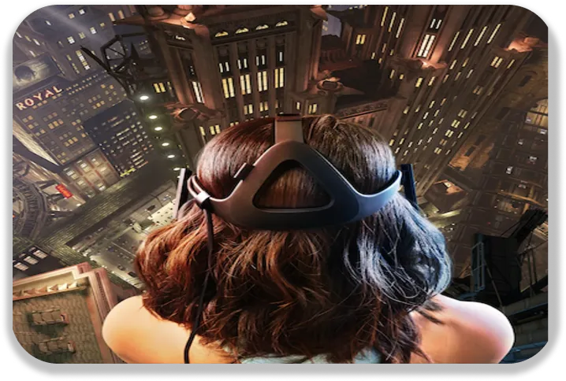

Nocif : c’est le mot pour décrire les nouvelles technologies. Bien qu’elles soient innovantes, elles sont aussi dangereuses. Dangereuses pour nous mais également pour l’environnement.
Un des risques des casques VR : ne plus dissocier la réalité du virtuel
Les nouvelles technologies sont nocives pour nous. Pour notre santé, notre sécurité, nos relations avec les autres. Prenons l’exemple du casque de réalité virtuelle. Très bonne invention pour s’immerger totalement dans un jeu vidéo. Mais être trop dans un jeu peut être dangereux. On risque de ne plus dissocier le réel du virtuel. On perd la notion du temps, ce qui peut nous confiner. En étant à fond dans un jeu, on pense moins au reste. Se nourrir, se doucher, voir des personnes réelles devient obsolète. Cela peut aussi être dangereux pour les plus jeunes. Ils auront moins de relations avec les autres, peuvent devenir addict plus vite. En exagérant, notre monde avec la VR pourrait être comme celui de Ready Player One.
L’inconvénient de la voiture autonome
Un autre danger des nouvelles technologies est la voiture autonome. Une bonne invention pour pouvoir faire plusieurs choses au volant. Cependant, on connait le résultat : dormir au volant, jouer ou regarder un film. Nous ne serons plus concentrés sur la conduite comme la voiture s’en occupe. On aura confiance dans le pilotage automatique. Mais pouvons-nous vraiment avoir confiance ? Un bug informatique ou même un piratage dans le pire des cas, est vite arrivé. Et au niveau du contrôle, en aurons-nous encore ? Pour éviter quelque chose que la voiture ne captera pas ? Mais le verrons-nous si nous faisons autre chose ?
Test pour permettre de rouler avec un casque vr dans le futur
Les nouvelles technologies nocives pour l’environnement
Les risques sur l’environnement ne sont pas moindres eux aussi. Des usines à la question de recyclage des produits, l’environnement est touché. Le plus gros exemple est le nucléaire, une substance dont on ne peut toujours pas se débarrasser, ni recycler. Les barrages hydrauliques peuvent aussi avoir un impact sur l’environnement. Qu’il se casse ou s’arrête, il y aura un impact sur l’environnement. Les usines rejettent des substances nocives pour nous sans forcément s’en rendre compte. Au fil du temps, cela peut être dangereux. Ces exemples ne sont que des exemples mais bien réels.